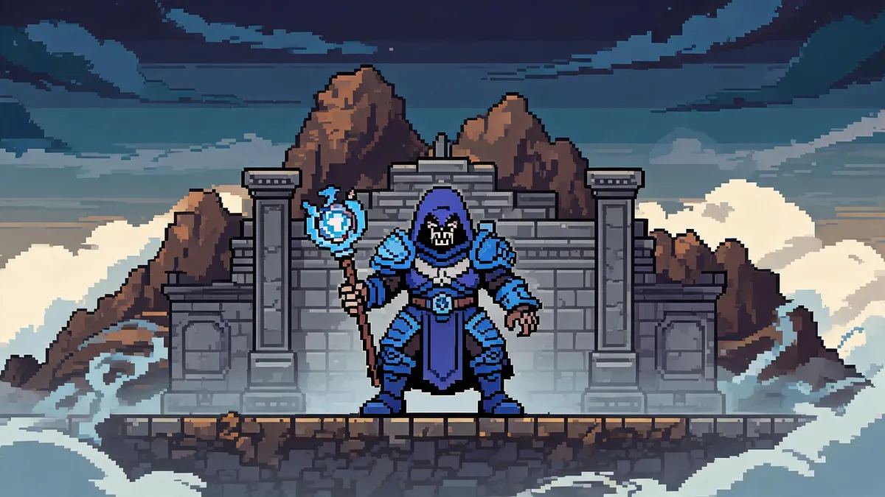

Lunatic Cultist Guide —The Final Gate

| Property | Details |
|---|---|
| HP | 32,000 (Normal) / 57,600 (Expert) / 73,440 (Master) |
| Damage | 35-60 (varies by attack) / 63-108 (Expert) |
| Defense | 32 (Normal) / 44 (Expert) |
| KB Resistance | 100% |
| Spawn | Appears at the Dungeon entrance immediately after Golem is defeated. Kill the Cultists at the Dungeon entrance to trigger the boss. |
Triggers Lunar Events
Defeating the Lunatic Cultist triggers the Lunar Events —four celestial pillars that spawn across the world. Defeating all four leads to the Moon Lord. There is no turning back once the Cultist is dead.
Preparation
- Armor: Beetle Armor (melee), Spectre Armor (mage), Shroomite Armor (ranged), or Spooky Armor (summoner). All endgame sets work.
- Weapons: Terra Blade, Razorblade Typhoon, Megashark with Chlorophyte Bullets, or any post-Plantera/Golem weapon upgraded to endgame tier.
- Accessories: Wings with hover capability (Betsy's Wings or Fishron Wings), Ankh Shield, Celestial Shell, all class emblem upgrades.
- Potions: All buff potions available at this stage. Lifeforce, Endurance, Ironskin, Regeneration, Mana Regeneration.
Arena Setup
The fight happens in the open area near the Dungeon entrance. No special preparation is needed, but a skybridge nearby helps. The Cultist doesn't enrage and doesn't flee, so you can kite him anywhere.
Strategy
Phase 1 —Direct Attacks
The Lunatic Cultist uses three main attacks:
- Fireball: Fires a slow fireball that splits into three. Easy to dodge with lateral movement.
- Ice bolt: Fires a spread of ice projectiles. Jump over them or phase through with a dash.
- Lightning orb: Summons a floating orb that fires lightning at you. Kill it quickly —it has low HP.
All three attacks are heavily telegraphed. Keep moving and you'll avoid most hits.
Phase 2 —Clones
At 50% HP, the Cultist creates three copies of himself. Only the real one has a shadow. The clones are a dangerous mechanic:
- Hit the real one. The real Cultist has a dark shadow underneath. Clones have lighter or no shadows.
- If you hit a clone, it transforms into a Phantasm Dragon (a fast, serpentine enemy that's hard to shake). Two mistakes = two dragons, and the fight becomes much harder.
- The clone phase repeats every time the Cultist loses about 25% HP. He'll create more clones each time.
- Use weapons with good single-target accuracy, not AoE weapons.
Watch the Shadow
The easiest way to identify the real Cultist: look at the ground. The real one has a distinct dark circular shadow. Clones have lighter shadows or no shadow at all. If you're unsure, don't attack —wait for the real one to attack first, then counter.
Rewards —What's Worth Your Time
- Ancient Manipulator (100%) —Essential. Drops every time. This crafting station is required to craft Lunar-tier gear from fragments dropped by the Celestial Pillars. You can't progress without it.
- Lunatic Cultist Mask / Trophy (Master) —Cosmetic.
Related Guides
- Golem Guide —defeat him first to access the Cultist
- Moon Lord Guide —the final boss after the Lunar Events
- Boss Progression Order